De día
Mosaico, azul y terracota. Los mismos colores que la tinta y los sellos.
Una tienda angosta al frente y un patio lleno de plantas al fondo, en la colonia Juárez. Eliges tu vino, armas tu tabla y te vas atrás a quedarte con los amigos.
La franja angosta es la tienda: vitrina de botellas, refris viejos, queso a la vista.
Del refri o de la vitrina. Sin carta de sumiller, con ganas de platicar.
Quesos, charcutería, higos, almendras, pan y mermeladas. Tú decides cuánto.
El patio: árboles, mesas de mosaico y sillas que no combinan a propósito.
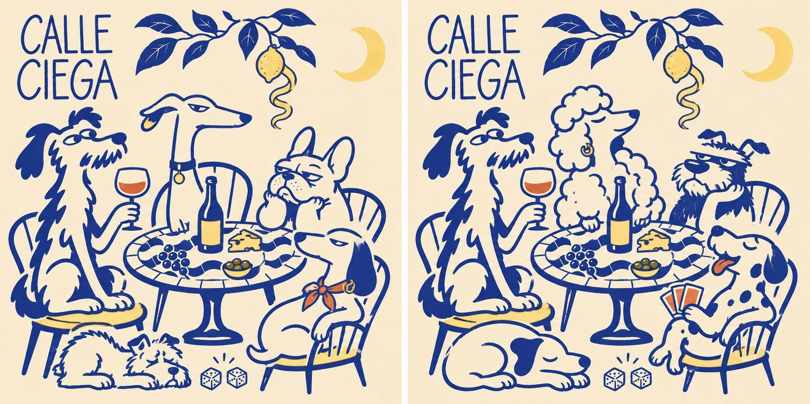
El nombre es un chiste con dos filos: la calle sin salida a la que se llega por error, y la cata a ciegas a la que nadie se negó.
Tono: joven pero listo. Seco, nunca cruel. Si hace falta explicar el chiste, el chiste sobra.
Perro de la colonia, de los de toda la vida. Ingenioso e inteligente, pero con los pies en la tierra, y siempre curioso: huele todo y pregunta todo.
Regla uno: cobalto sobre crema es el 90 % de todo. Es la firma.
Regla dos: el limón es luz (limón, luna, copa de vino blanco). La terracota es calidez (pañuelo, celosía, cartas). Nunca los dos a la misma escala.
Regla tres: sin degradados, sin sombras suaves, sin 3D. Si hay sombra, es un bloque plano desplazado.
Regla cuatro: el trazo tiene dos voces, limpio (logo, iconos, etiquetas) y crayón (ilustraciones de escena y cartelería). No se mezclan en la misma pieza.
Mayúsculas finas de pulso humano, apiladas. Solo para el nombre; no se escribe con teclado.
Fraunces para titulares y frases con gracia; DM Mono, en mayúsculas separadas, para etiquetas y datos.
Flor
Greca
Ola
Estrella
Sol
Damero
Los mosaicos salen de azulejo y mesa de mosaico; sirven de sello, posavasos y mural.
Maquetas hechas con las piezas aprobadas. Los textos de la carta y la etiqueta son de muestra, no de menú real.
Del tablero de Pinterest del proyecto: mosaico y sol de día, mesas generosas, refris de autoservicio, luz ámbar y música de noche.


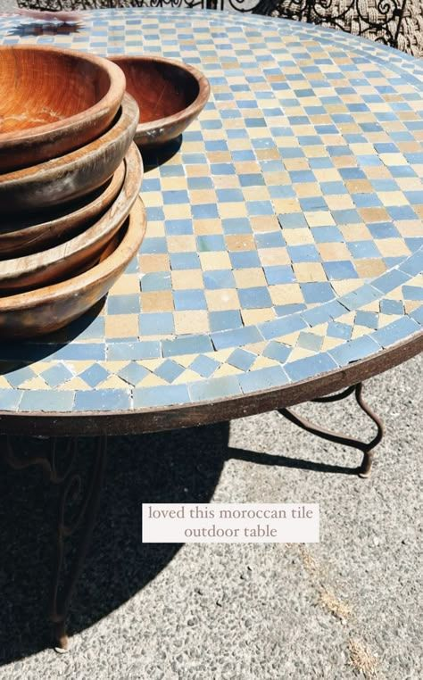
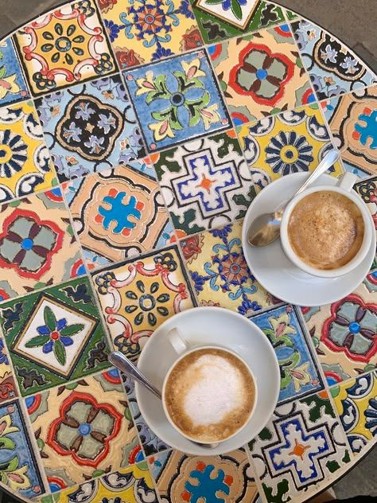
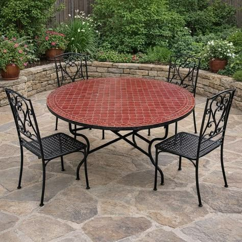
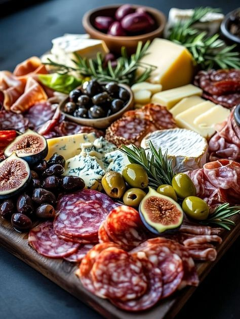
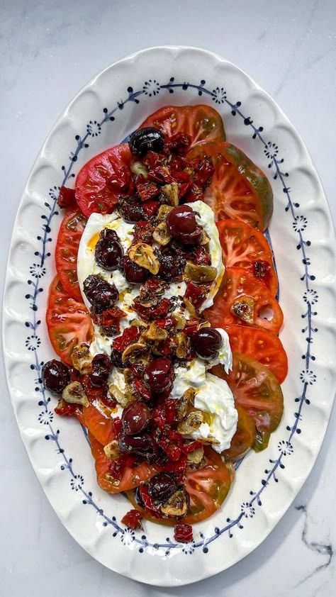

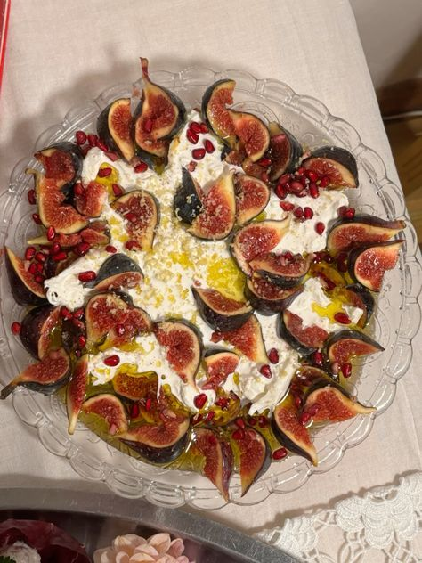
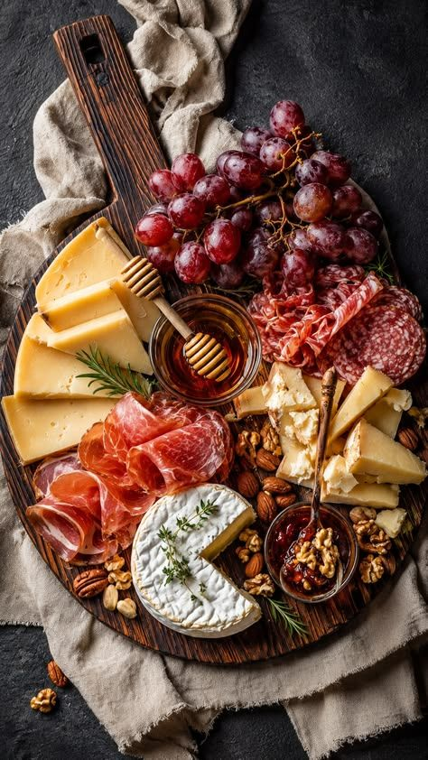


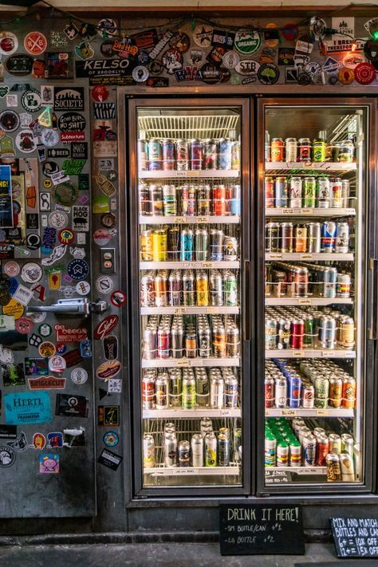
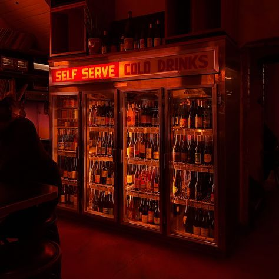
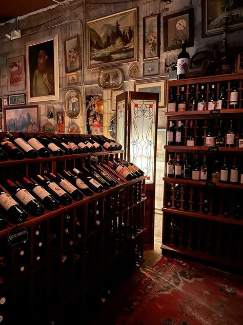

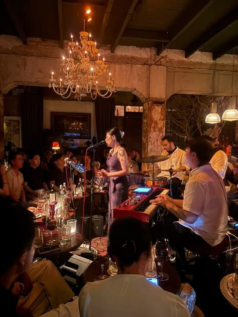
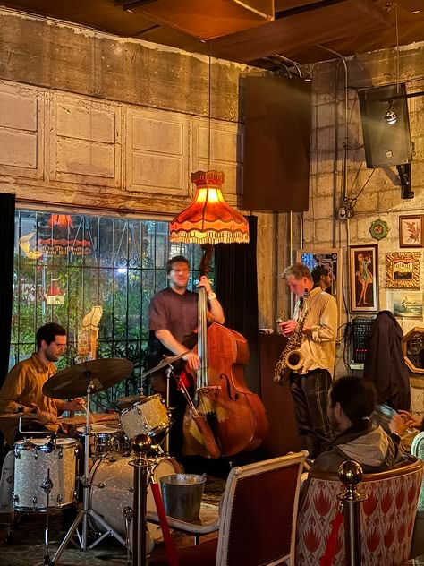

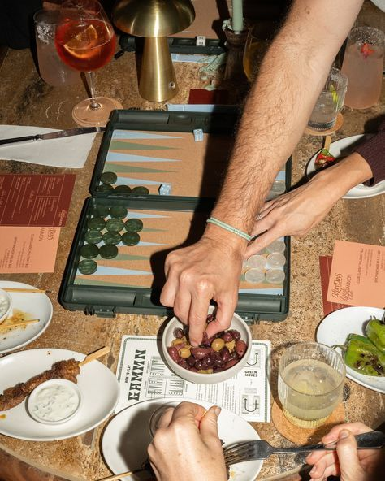

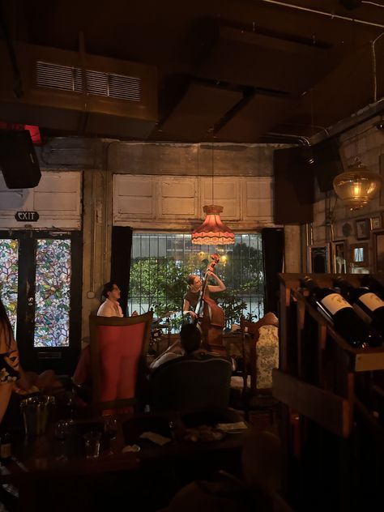
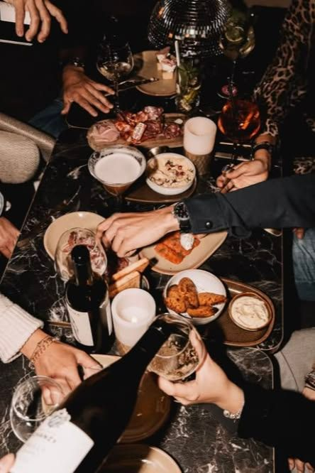
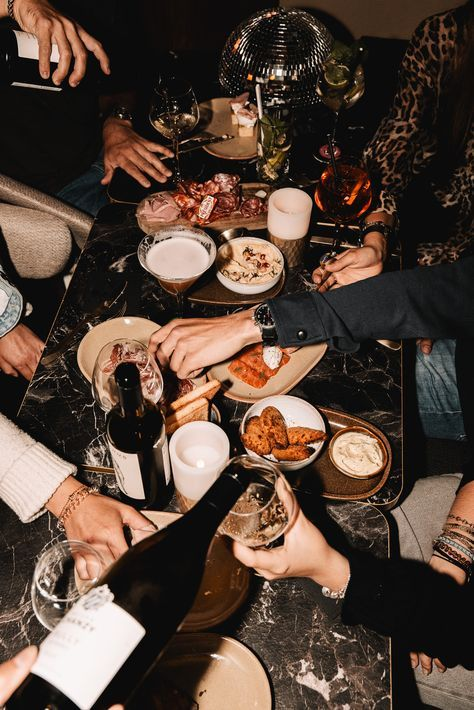
Mosaico, azul y terracota. Los mismos colores que la tinta y los sellos.
Generosa y sin orden. Mucha mesa, poca ceremonia.
Autoservicio verde menta, latas con stickers, paredes de botellas.
Luz ámbar, jazz y una partida. Bajar la luz y quedarse.
Referencias de terceros, sin crédito: solo para uso interno del proyecto, no para publicar.
Lo que ya existe se queda: la celosía de barro, el muro de tabique con su techumbre blanca y los árboles del fondo. El resto se resuelve con cal, pintura, plantas y luz.

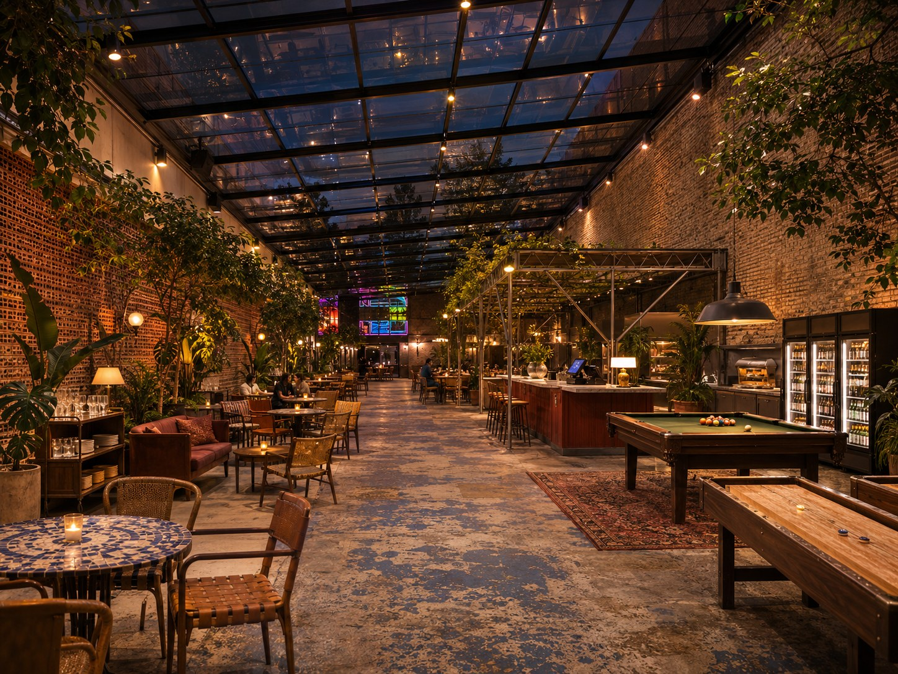
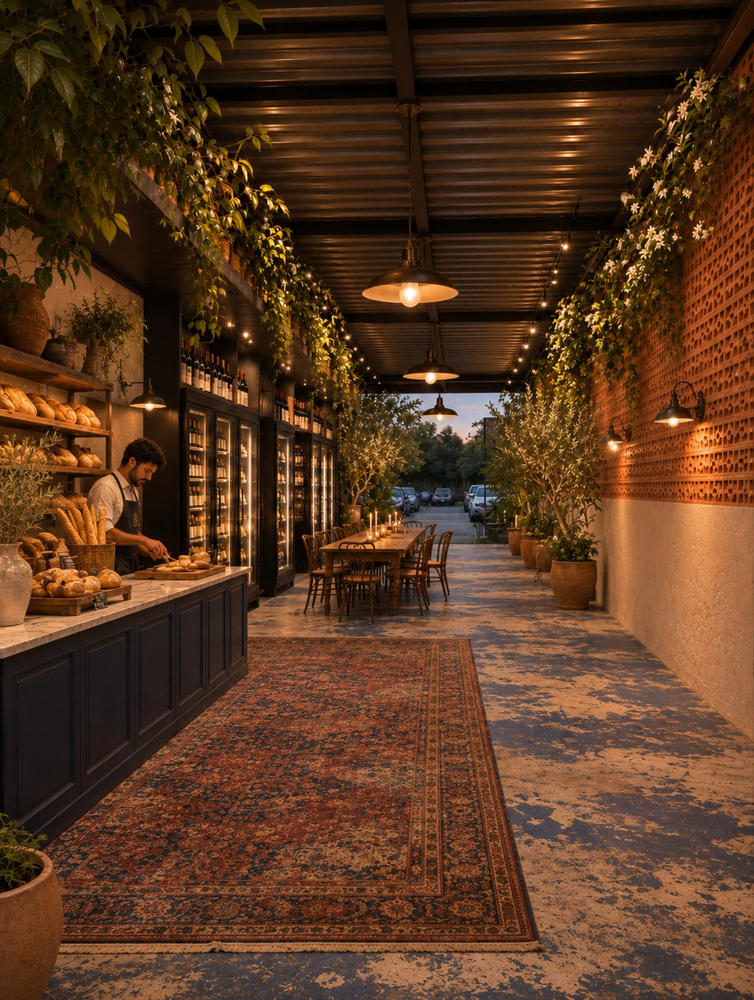
Renders de concepto hechos con IA a partir de las fotos del sitio. Pendiente: más renders y medidas reales antes de hablar de distribución y costos.